使用Git
前言：本指南假设您对计算机上的命令行有基本了解。如果您从未使用过命令行，请考虑阅读 实验1 的"终端"部分。
本指南主要作为 Git 的入门和浅层参考资料。如果您正在寻找类似"哦不，我的仓库出事了！"的内容，并想查看可能的修复方法，请参阅 61B git-WTFS （git 奇怪技术故障场景）。
A. 版本控制系统简介
版本控制系统
是用于跟踪文件随时间变化的工具。版本控制允许您查看或恢复文件的早期版本。版本控制的某些功能实际上已经内置于常用应用程序中。想想
undo
命令，或者您如何查看 Google 文档的修订历史。
在编码环境中，版本控制系统可以跟踪代码修订的历史，从代码的当前状态一直追溯到首次被跟踪时。这使用户可以参考他们工作的旧版本，并与其他人（如开发伙伴）共享代码更改。
版本控制已成为行业中软件开发和协作的支柱。在本课程中，我们将使用 Git 。Git 拥有出色的 文档 ，因此我们强烈鼓励有兴趣的人阅读更多关于本指南其余部分将总结的内容。
Git简介
Git 是一个 分布式版本控制系统 ，与集中式版本控制系统相对。这意味着每个开发者的计算机都存储了整个项目的完整历史（包括所有旧版本）！这与 Dropbox 等工具完全不同，后者的旧版本存储在其他人拥有的远程服务器上。我们将整个项目的完整历史称为"仓库"。仓库存储在本地这一事实使我们能够在自己的计算机上本地使用 Git，即使没有互联网连接。
实验室计算机已经在命令行上安装了 Git， 实验 1 安装 指南解释了如何在您自己的计算机上安装 git。除了我们将在本指南中学习使用的基于文本的界面外，还有一个 Git GUI（图形用户界面） 。我们不会正式支持图形 GUI 的使用。
B. 本地仓库（叙事性介绍）
让我们通过一个叙事性示例来了解我们可能如何使用 git。在这个故事中，我们将使用 许多不熟悉的术语和概念。关于这个叙事示例的视频版本，请参阅 此 视频 。
假设我们想在计算机上存储各种食谱，并且还想
在我们修改这些食谱时跟踪它们的历史。我们可能会先
为烤麸和豆腐食谱创建目录，然后使用 Sublime
（在我的计算机上使用
subl
命令调用）创建每个
食谱。
我们假设你只是在阅读，而不是自己尝试
这些命令。如果你想通过输入所有内容来跟着做，你需要
使用计算机上安装的文本编辑器，而不是
subl
。
$ cd /users/sandra
$ mkdir recipes
$ cd recipes
$ mkdir seitan
$ mkdir tofu
$ cd seitan
$ subl smoky_carrot_tahini_seitan_slaw.txt
$ subl boiled_seitan.txt
$ cd ../tofu
$ subl kung_pao_tofu.txt
$ subl basil_ginger_tofu.txt
现在我们有四个食谱，两个豆腐的，两个烤麸的。要设置我们的 git 仓库来存储食谱随时间演变的历史，我们将使用以下命令：
$ cd /users/sandra/recipes
$ git init
git init
的作用是告诉 git 版本控制系统我们想要跟踪当前目录的历史，在本例中是
/users/sandra/recipes
。但是，此时
仓库中什么都没有存储
。这就像我们买了一个保险箱，但还没有把任何东西放进去。
要将所有内容存储到仓库中，我们需要先
add
文件。例如，我们可以执行以下操作：
git add tofu/kung_pao_tofu.txt
这就是 git 开始显得奇怪的地方。即使在调用了
add
命令之后，我们
仍然
没有将食谱存储到仓库中（即保险箱中）。
相反，我们所做的是将
kung_pao_tofu.txt
添加到要跟踪的文件列表中（即稍后要添加到保险箱中）。这样做的原因是你可能不一定想要跟踪
/users/sandra/recipes
文件夹中的每个文件，所以
add
命令告诉 git 应该跟踪哪些文件。我们可以使用
git status
来查看这个命令的效果。
$ git status
在这种情况下，你会看到以下响应：
On branch main
No commits yet
Changes to be committed:
(use "git rm --cached <file>..." to unstage)
new file: tofu/kung_pao_tofu.txt
Untracked files:
(use "git add <file>..." to include in what will be committed)
seitan/
tofu/basil_ginger_tofu.txt
输出中"要提交的更改"部分列出了当前正在跟踪且其更改已准备好提交（即准备放入保险箱）的所有文件。我们还看到有一些未跟踪的文件；即
seitan/
文件夹和
tofu/basil_ginger_tofu.txt
文件。这些文件未被跟踪，因为我们没有使用
git add
添加它们。
注意：
添加也称为
暂存
（
stage
等同于
add
）。
让我们尝试添加
tofu/basil_ginger_tofu.txt
并再次检查状态：
$ git add tofu/basil_ginger_tofu.txt
$ git status
On branch main
No commits yet
Changes to be committed:
(use "git rm --cached <file>..." to unstage)
new file: tofu/basil_ginger_tofu.txt
new file: tofu/kung_pao_tofu.txt
Untracked files:
(use "git add <file>..." to include in what will be committed)
seitan/
我们看到两个豆腐食谱都被跟踪了，但两个烤麸食谱都没有被跟踪。接下来我们将使用
commit
命令将我们的豆腐食谱副本放入仓库（即保险箱）。为此，我们使用
git commit
命令，如下所示：
$ git commit -m "add tofu recipes"
执行时，
commit
命令会将所有暂存更改的快照（在
本例中是我们的豆腐食谱）存储到仓库中。因为我们没有对烤麸食谱使用
git
add
，所以它们没有包含在放入
仓库的快照中。
我们工作的这个快照现在将永远安全（只要我们
计算机的硬盘不坏，或者我们不损坏秘密的仓库
文件）。
-m
标志让我们可以向提交添加消息，这样我们就能记住
这次提交最重要的是什么（Git 实际上不允许你在没有
消息的情况下提交）。常见的约定是使用动词的
祈使
形式
，而不是
过去式。例如，上面的提交消息说的是"add tofu recipes"
而不是"added tofu recipes"。
另一个类比是，你可以把整个过程想象成用相机
拍摄全景照片。
add
命令捕获图像的一部分，而
commit
命令将所有"添加"的项目拼接成一张全景图
并将这张全景图扔进保险箱。就像全景图只包含
你指向的东西（而不是你周围整个 360 度的圆圈）一样，
commit
命令只保护那些使用
add
命令添加的文件
（而不是 recipes 目录中的所有文件）。
提交后，你会注意到
git status
不再在
"要提交的更改"下列出文件。这类似于你拍完一张
全景照片后，所有临时的小图像文件都被扔掉了。
此时
git status
的结果如下所示：
$ git status
On branch main
Untracked files:
(use "git add <file>..." to include in what will be committed)
seitan/
nothing added to commit but untracked files present (use "git add" to track)
正如你从我们使用它的次数中可能猜到的那样，
status
对于
查看仓库中当前发生的事情非常有用。如果你遇到
意外行为，
git status
是首先要看的！
如果你查看
tofu/
文件夹中的文件，你会发现提交
过程并没有影响我们计算机上的原始文件。这很像
当你给朋友拍全景照片时，他们不会被吸进
你手机里的网络地狱。
我们可以使用特殊的
git log
命令来查看我们的快照。
$ git log
commit 9f955d85359fc8e4504d7220f13fad34f8f2c62b
Author: Sandra Upson <sandra@Sandras-MacBook-Air.local>
Date: Sun Jan 17 19:06:48 2016 -0800
add tofu recipes
那一大串字符 9f955d85359fc8e4504d7220f13fad34f8f2c62b 是
提交的 ID。我们可以使用
git show
命令来查看这个
提交的内部。
$ git show 9f955d85359fc8e4504d7220f13fad34f8f2c62b
commit 9f955d85359fc8e4504d7220f13fad34f8f2c62b
Author: Sandra Upson <sandra@Sandras-MacBook-Air.local>
Date: Sun Jan 17 19:06:48 2016 -0800
add tofu recipes
diff --git a/tofu/basil_ginger_tofu.txt b/tofu/basil_ginger_tofu.txt
new file mode 100644
index 0000000..9a56e7a
--- /dev/null
+++ b/tofu/basil_ginger_tofu.txt
@@ -0,0 +1,3 @@
+basil
+ginger
+tofu
diff --git a/tofu/kung_pao_tofu.txt b/tofu/kung_pao_tofu.txt
new file mode 100644 index
0000000..dad9bd9
--- /dev/null
+++ b/tofu/kung_pao_tofu.txt
@@ -0,0 +1,3 @@
+szechuan peppers
+tofu
+peanuts
+kung
+pao
git show
命令让我们可以直接窥视提交的核心。我们
不期望它的所有内部结构对你都有意义，但你也许可以
了解到提交是文件名称和内容的快照。
注意
：你在现实生活或 61B 中很少会使用
show
，但
它在这里有助于窥视提交内部，以便更好地了解它们
是什么。
假设我们现在想要修改我们的宫保食谱，因为我们决定它应该 包含小白菜。
$ subl tofu/kung_pao_tofu.txt
我们刚刚对
kung_pao_tofu.txt
所做的更改没有保存在仓库中。
事实上，如果我们再次执行
git status
，我们会得到：
$ git status
On branch main
Changes not staged for commit:
(use "git add <file>..." to update what will be committed)
(use "git restore <file>..." to discard changes in working directory)
modified: tofu/kung_pao_tofu.txt
Untracked files:
(use "git add <file>..." to include in what will be committed)
seitan/
你可能会想"好吧，那我就再提交一次"。但是，如果 我们尝试提交，git 会说没有什么可做的：
$ git commit -m "add bok choy"
On branch main
Changes not staged for commit:
modified: tofu/kung_pao_tofu.txt
Untracked files:
seitan/
no changes added to commit
这是因为即使
kung_pao_tofu.txt
正在被
跟踪
，我们还没有
暂存
我们的更改以进行提交。要将我们的更改存储在仓库中，我们
首先需要再次使用
add
命令，这将暂存更改以进行
提交（或者换句话说，我们需要先给我们新的
kung_pao_tofu.txt
拍张照片，然后才能创建我们想要放入
保险箱的新全景图）。
$ git add tofu/kung_pao_tofu.txt
$ git status
On branch main
Changes to be committed:
(use "git restore --staged <file>..." to unstage)
modified: tofu/kung_pao_tofu.txt
Untracked files:
(use "git add <file>..." to include in what will be committed)
seitan/
我们看到对
kung_pao_tofu.txt
的更改现在"待提交"（它已经
被暂存），这意味着下一次提交将包含对此文件的更改。我们
像以前一样提交，并使用
git log
来查看所有已拍摄的
快照列表。
$ git commit -m "add bok choy"
$ git log
commit cfcc8cbd88a763712dec2d6bd541b2783fa1f23b
Author: Sandra Upson <sandra@Sandras-MacBook-Air.local>
Date: Sun Jan 17 19:24:45 2016 -0800
add bok choy
commit 9f955d85359fc8e4504d7220f13fad34f8f2c62b
Author: Sandra Upson <sandra@Sandras-MacBook-Air.local>
Date: Sun Jan 17 19:06:48 2016 -0800
add tofu recipes
我们现在看到有两个提交。我们可以再次使用
show
来查看
cfcc8cbd88a763712dec2d6bd541b2783fa1f23b 中更改了什么，但在本指南中我们不会这样做。
假设我们后来觉得小白菜很恶心，想要将食谱恢复到
最初的版本。我们可以使用
git restore
命令来回滚我们的文件，如
下面所示：
$ git restore --source=9f955d85359fc8e4504d7220f13fad34f8f2c62b tofu/kung_pao_tofu.txt
把
restore
命令想象成一个机器人，它去我们的保险箱，找出
当最新的全景图是
9f955d85359fc8e4504d7220f13fad34f8f2c62b 时宫保豆腐食谱的样子，最后修改实际的
tofu/kung_pao_tofu.txt
文件，使其与
快照 9f955d85359fc8e4504d7220f13fad34f8f2c62b 创建时
完全一样。如果我们现在
在运行此命令后查看
kung_pao_tofu.txt
的内容，
我们会发现小白菜不见了（呼！）。
$ cat tofu/kung_pao_tofu.txt
szechuan
peppers
tofu
peanuts
kung
pao
重要提示：
restore
不会更改提交历史！
或者，换
句话说，包含我们全景照片的保险箱完全不受
restore
命令的影响。git 的全部意义在于创建我们文件
曾经发生过的一切的日志。换句话说，如果你在 2014 年和 2015 年
给你的房间拍了全景照片并把它们放进保险箱，然后在 2016 年
决定把它完全恢复到 2014 年的样子，你不会把 2015 年的
全景照片烧掉。你也不会让 2016 年的照片
神奇地出现在你的保险箱里。如果你想记录它在
2016 年的样子，你需要再拍一张照片（并附上适当的
-m
消息来
记住你刚刚做了什么）。
如果我们想真正保存最新版本的宫保豆腐 食谱的快照（不再有小白菜），我们必须提交。记住我们 需要先暂存这个更改！
$ git add tofu/kung_pao_tofu.txt
$ git commit -m "restore the original recipe with no bok choy"
$ git log
commit 4be06747886d0a270bf1d618d58f3273f0219a69
Author: Sandra Upson <sandra@Sandras-MacBook-Air.local>
Date: Sun Jan 17 19:32:37 2016 -0800
restore the original recipe with no bok choy
commit cfcc8cbd88a763712dec2d6bd541b2783fa1f23b
Author: Sandra Upson <sandra@Sandras-MacBook-Air.local>
Date: Sun Jan 17 19:24:45 2016 -0800
add bok choy
commit 9f955d85359fc8e4504d7220f13fad34f8f2c62b
Author: Sandra Upson <sandra@Sandras-MacBook-Air.local>
Date: Sun Jan 17 19:06:48 2016 -0800
add tofu recipes
然后我们可以使用
show
来查看这个最新提交的内容。
$ git show 4be06747886d0a270bf1d618d58f3273f0219a69
commit 4be06747886d0a270bf1d618d58f3273f0219a69
Author: Sandra Upson <sandra@Sandras-MacBook-Air.local>
Date: Sun Jan 17 19:32:37 2016 -0800
restore the original recipe with no bok choy
diff --git a/tofu/kung_pao_tofu.txt b/tofu/kung_pao_tofu.txt
index 35a9e71..dad9bd9 100644
--- a/tofu/kung_pao_tofu.txt
+++ b/tofu/kung_pao_tofu.txt
@@ -1,4 +1,3 @@
szechuan
peppers
tofu
peanuts
kung
pao
-bok choy
\ No newline at end of file
这就是 git 的基础。用我们的照片类比来总结一下：
-
git init：创建一个盒子（仓库），永久存储全景 照片（提交）。 -
git add：给某物拍一张临时照片（暂存），稍后可以 组装成全景照片。 -
git commit：将所有可用的临时照片（暂存的更改）组装成 一张全景照片。同时销毁所有临时照片。 -
git log：列出我们拍过的所有全景照片。 -
git show：检查特定全景照片的内容。 -
git restore：将文件重新排列回给定全景 照片中的样子。不会以任何方式影响你盒子里的全景照片。
关于 git 还有更多需要学习的，但在我们开始之前，让我们对 我们刚刚做的事情给出一个更正式的解释。
C. 本地仓库（技术概述）
初始化本地仓库
让我们先从 本地仓库 开始。如上所述， 仓库存储文件以及这些文件的更改历史。为了 开始，你必须通过在终端中输入以下命令 来初始化 Git 仓库， 当你在想要将其历史 存储在本地仓库中的目录中时 。如果你使用的是 Windows，你应该在输入 这些命令时使用 Git Bash 终端窗口。提醒：如果你不确定 如何使用终端窗口，请考虑查看 实验 1 设置 的"学习使用 终端"部分。
$ git init
专家额外内容：当你初始化 Git 仓库时，Git 会创建一个
.git
子目录。在这个目录中，它会存储一堆元数据，以及
文件的实际旧快照。但是，你永远不需要
实际打开这个 .git 目录的内容，而且你绝对不应该
直接更改里面的任何东西！
根据你的操作系统，你可能看不到这个文件夹，因为
名称以"."开头的文件夹默认不会被你的操作系统显示。UNIX 命令
ls -la
将列出所有目录，包括你的
.git
目录，所以你可以
使用此命令检查你的仓库是否已正确初始化。
已跟踪与未跟踪文件
Git 仓库开始时不跟踪任何文件。为了保存 文件的修订历史，你需要跟踪它。Git 文档有一个关于 记录 更改 的精彩部分。 为方便起见，该部分的图片放在这里：
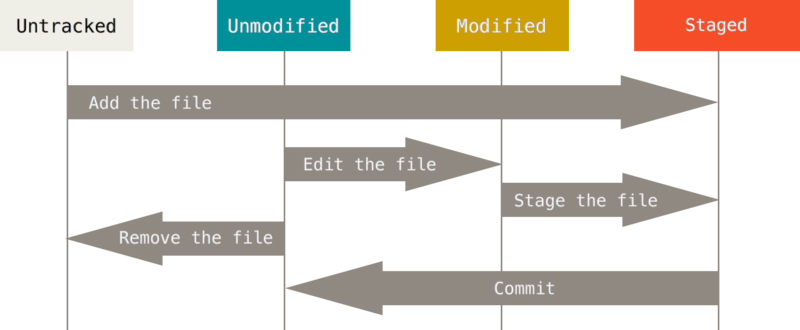
如图所示，文件分为两大类：
-
未跟踪 文件：这些文件要么从未被跟踪过，要么已从 跟踪中移除。Git 不为这些文件维护历史。
-
已跟踪 文件：这些文件已添加到 Git 仓库中，并且可能 处于各种修改阶段：未修改、已修改或已暂存。
-
未修改 文件是指自上次 文件版本添加到 Git 仓库以来没有新更改的文件。
-
已修改 文件是指与 Git 已 保存的上一个文件不同的文件。
-
已暂存 文件是指用户已指定为未来 提交的一部分的文件（通常通过使用
git add命令）。我们可以把这些 看作是被光照亮的文件。
-
以下 Git 命令让你查看每个文件的状态，即 它是未跟踪、未修改、已修改还是已暂存：
$ git status
git status
命令对于确定仓库中
每个文件的确切状态非常有用。如果你对更改了什么以及
需要提交什么感到困惑，它可以提醒你下一步该做什么。
暂存与提交
提交 是你在特定 时间的工作目录的特定快照。用户必须通过 暂存 文件来指定快照的确切组成。
add
命令让你暂存一个文件（不带方括号）。
$ git add [file]
你也可以暂存整个文件夹，这将递归暂存其中的所有文件和 子文件夹（这对许多 git 命令也适用，只需将文件 替换为文件夹）。一旦你暂存了所有想要包含在 快照中的文件，你就可以将它们作为一个块连同消息一起提交。
$ git commit -m "your commit message here"
你的消息应该是描述性的，并解释你的提交对 代码做了什么更改。你可能想要快速描述错误修复、实现的类等， 这样你的消息在以后查看提交日志时会很有帮助。
为了查看以前的提交，你可以使用 log 命令：
$ git log
Git 参考指南有一个关于
查看提交
历史
和
在搜索特定提交时过滤日志结果的有用部分。也可能值得
查看
gitk
，这是一个由命令行启动的 GUI。
关于开发工作流程的旁注，尽可能频繁地 提交代码是个好主意。每当你对 代码进行重大（甚至是微小的）更改时，就提交一次。如果你正在尝试一些你可能不会 坚持的东西，就提交它（也许提交到不同的分支，这将在下面解释）。
经验法则 ：如果你提交了，你总是可以恢复你的旧代码或更改 它。但是，如果你不提交，你将无法找回旧版本。所以 经常提交！
撤销更改
Git 参考资料有一个关于 撤销 操作 的精彩部分。请注意， 虽然 Git 围绕历史的概念展开，但如果你使用其中一些撤销命令 进行还原，可能会丢失你的工作。因此，在撤销你的工作之前， 要小心并了解你的更改的影响。
-
取消暂存你尚未提交的文件：
$ git restore --staged [file]这会将
file的状态恢复为已修改，保留更改不变。 不要担心这个命令会撤销任何工作。这个命令相当于 删除你要组合成全景图的其中一张临时图像。为什么我们可能需要使用这个命令？假设你不小心开始 跟踪一个你不想跟踪的文件。（例如，你自己的 一段尴尬视频。）或者你对一个文件做了一些你以为 会提交但现在还不想提交的更改。
-
修改最新提交（更改提交消息或添加忘记的文件）：
$ git add [forgotten-file] $ git commit --amend请注意，这个新修改的提交将替换之前的提交。
-
将文件恢复到最近一次提交时的状态（ 小心使用！ ）：
$ git restore [file]如果
file已被暂存，你需要先取消暂存它。如果你想合法地撤销你的工作，这个命令很有用。例如， 如果你自上次提交以来不小心修改了某个文件， 并想将其改回原来的样子。
使用此命令要小心！ 自上次提交以来对文件所做的任何更改都将丢失。 如果你想安全起见，先暂存并提交你的更改， 然后使用下面的命令之一恢复到以前的版本。
获取文件的以前版本
假设你正在做一个实验，做到一半时，你意识到你一直 都做错了。要是有办法找回骨架代码，让你可以 重新开始就好了！
如果你还没有提交，你可以使用上一个命令——但如果你已经 提交了一些更改怎么办？你可以使用更强大的
git restore --source=[commit or branch] [file or folder]
它可以从任意时间点获取文件。例如，假设你
不小心删除了
lab1000/
，并提交了该更改。哦不！要解决
这个问题，你可以用以下命令找回骨架代码
git restore --source=skeleton/main lab1000/
这允许你从
lab1000
的骨架代码重新开始。
现在考虑这样一个场景：你在
lab1000/Cheese.txt
上取得了一些进展，
并想找回该文件在几次提交前的版本。你可以
使用
git log
找到正确的提交，然后运行
git restore --source=abcd1234efgh7890abcd1234c7ee5e7890c7ee5e lab1000/Cheese.txt
其中
abcd1234efgh7890abcd1234c7ee5e7890c7ee5e
是
git log
中
包含我们想要恢复的
lab1000/Cheese.txt
版本的提交的 ID。
记住，你需要重新暂存该文件，以便下一次提交跟踪 你的恢复操作！
如果你正在做实验 1，是时候返回并做 git 练习了。
D. 远程仓库
Git 的一个特别方便的功能是能够在你自己的 计算机之外的计算机上存储仓库副本。回想一下，我们的快照都 存储在我们计算机的一个秘密文件夹中。这意味着如果我们的计算机损坏 或被摧毁，我们所有的快照也会丢失。
假设我们想把我们的豆腐和烤麸食谱推送到另一台计算机，我们 通常会使用以下命令。
$ git push origin main
但是，如果我们尝试这样做，我们只会得到下面的消息：
fatal: 'origin' does not appear to be a git repository
fatal: Could not read from remote repository.
Please make sure you have the correct access rights and the repository exists.
这是因为我们还没有告诉 git 把文件发送到哪里。碰巧的是， 有一家名为 GitHub 的营利性私人公司，靠存储 人们的仓库副本做生意。
在 61B 中，我们将使用 GitHub 来存储我们的仓库。要在 GitHub 上创建仓库，你可能会使用他们的 Web 界面。但是，我们已经为你 完成了这一步。
下面列出了最重要的远程仓库命令，以及可能 暂时还不太明白的技术描述。如果你正在做实验 1， 回到实验中去了解更多关于这些命令的信息。
-
git clone [remote-repo-URL]：创建指定仓库的副本，但 在你的本地计算机上。还创建一个工作目录，其中文件的 排列方式与下载仓库中最新的快照完全一样。 还记录远程仓库的 URL 以供后续的网络数据 传输使用，并给它一个特殊的远程仓库名称"origin"。 -
git remote add [remote-repo-name] [remote-repo-URL]：记录一个新的位置 用于网络数据传输。 -
git remote -v：列出所有网络数据传输的位置。 -
git pull [remote-repo-name] main：获取文件的最新副本， 如remote-repo-name中所示。 -
git push [remote-repo-name] main：将你文件的最新副本上传 到remote-repo-name。
在本课程的大部分时间里，你只会有两个远程仓库： origin ， 它是用于保存和提交你个人工作的远程仓库，以及 skeleton ，它是你从中接收骨架代码的远程仓库。
E. Git 分支（高级 Git）（可选）
这条线以下的所有内容对于 61B 都是可选的。
注意：
2020 年，Git 将默认分支名称从
master
更改为
main
。
下面的图形尚未相应更新——目前，只需将
master
视为
main
的过时等效项。
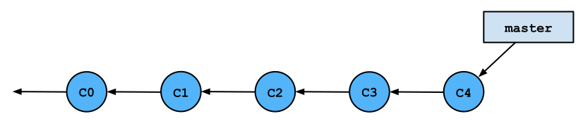
到目前为止我们介绍的每个命令都在使用默认分支。
这个分支通常被称为
main
分支。但是，在某些
情况下，你可能想要在代码中创建分支。
分支允许你同时跟踪工作的多个不同版本。 一种理解方式是将分支视为替代维度。 也许一个分支是选择使用链表的结果，而另一个 分支是选择使用数组的结果。
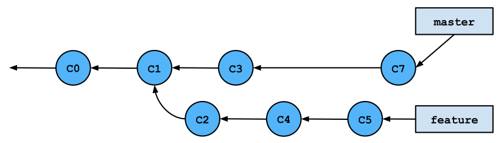
分支的原因
以下是一些可能适合创建分支的情况。
-
你可能想要对现有代码进行重大更改（称为 重构），但这会破坏项目的其他部分。但你希望能够 同时处理其他部分，或者你有合作伙伴，你不想 为他们破坏代码。
-
你想开始处理项目的新部分，但你还不确定 你的更改是否会起作用并进入最终产品。
-
你正在与合作伙伴合作，不想将你当前的工作与 他们的工作混在一起，即使你想在将来的某个时候 将你们的工作合并在一起。
创建分支将让你跟踪代码的多个不同版本， 你可以轻松地在版本之间切换，并在你 完成某个部分的工作并希望它加入其余代码时 将分支合并在一起。
示例场景
例如，假设你到目前为止已经完成了一个项目的一半。还有一个
困难的部分没有完成，你不知道怎么做。也许你
有三个不同的想法来做这件事，你不确定哪个会
起作用。在这一点上，可能是一个好主意从
main
创建一个分支
并尝试你的第一个想法。
-
如果你的代码有效，你可以将分支合并回你的主代码（在
main分支上）并提交你的项目。 -
如果你的代码不起作用，不要担心恢复代码和 操纵 Git 历史。你可以简单地切换回
main，它不会 有你的任何更改，创建另一个分支，并尝试你的第二个想法。
这可以一直持续到你找到编写代码的最佳方式，而且你
最后只需要将有效的分支合并回
main
。
Git 参考资料有一个关于 分支与 合并 的部分， 其中有一些关于分支如何在 Git 的底层数据 结构中表示的图表。事实证明，Git 将提交历史跟踪为一个带有 分支指针和提交作为图中节点的图。（因此有与树相关的 术语。）
创建、删除和切换分支
一个名为
HEAD
的特殊分支指针引用你当前
作为工作目录的分支。分支指令修改分支并
更改你的
HEAD
指向的内容，以便你看到文件的不同版本。
-
以下命令将从你当前的分支创建一个分支。
$ git branch [new-branch-name] -
此命令让你通过更改 你的
HEAD指针引用哪个分支来从一个分支切换到另一个分支。$ git switch [destination-branch]默认情况下，你的初始分支称为
main。建议你 坚持这个约定。但是，每个其他分支都可以命名为 你想要的任何名称。通常，给你的分支起一个 描述性的名字是个好主意，比如fixing-ai-heuristics，这样你就能记住 它包含哪些提交。 -
你可以用这一个命令组合前面两个创建新分支然后 切换到它的命令：
$ git switch -c [new-branch-name] -
你可以使用以下命令删除分支：
$ git branch -d [branch-to-delete] -
你可以使用此命令轻松找出你在哪个分支上：
$ git branch -v更具体地说，
-v标志还将列出每个分支上的最后一次提交。
合并
很多时候你会想要将一个分支合并到另一个分支。例如，
假设你喜欢你在
fixing-ai-heuristics
上所做的工作。
你的 AI 现在超级厉害，你希望你的
main
分支能看到你在
fixing-ai-heuristics
上所做的提交，并删除
fixing-ai-heuristics
分支。
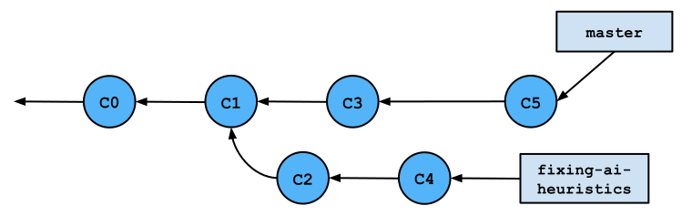
在这种情况下，你应该切换到
main
分支并将
fixing-ai-heuristics
合并到
main
中。
$ git switch main
$ git merge fixing-ai-heuristics
这个
merge
命令将创建一个新的提交，将两个分支
连接在一起，并更改每个分支的指针以引用这个新提交。虽然
大多数提交只有一个父提交，但这个新的合并提交有两个父
提交。
main
分支上的提交称为其
第一个父提交
，而
fixing-ai-heuristics
分支上的提交称为其
第二个父提交
。
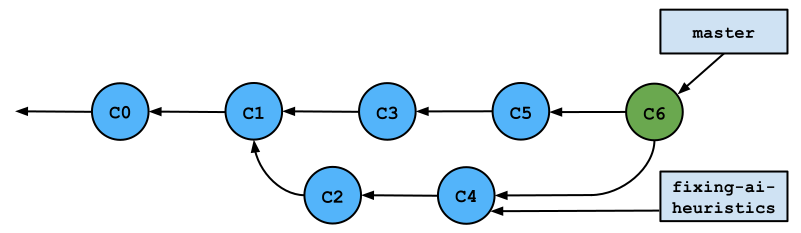
合并冲突
可能会发生你试图合并的两个分支有冲突 信息的情况。如果两个分支上的提交更改了相同的 文件，就会发生这种情况。Git 足够复杂，可以解决许多更改，即使它们发生 在同一个文件中（尽管是不同的位置）。
但是，有时冲突无法由 Git 解决，因为 更改影响相同的方法/代码行。在这些情况下，它会将 来自不同分支的两个更改都呈现给你，作为 合并冲突 。
解决合并冲突
Git 会告诉你哪些文件有冲突。你需要打开有 冲突的文件并手动解决它们。完成后，你必须提交以 完成两个分支的合并。
有冲突的文件将包含看起来像这样的片段：
<<<<<<< HEAD
for (int i = 0; i < results.length; i++) {
println(results[i]);
println("FIX ME!");
}
=======
int[] final = int[results.length];
for (int i = 0; i < results.length - 1; i++) {
final[i] = results[i] + 1;
println(final[i]);
}
>>>>>>> fixing-ai-heuristics
基本上，你会看到两个带有相似代码片段的部分：
-
顶部的代码片段来自你运行
merge命令时 最初切换到的分支。它被称为HEAD，因为在merge时HEAD指针 引用了这个分支。继续我们上面的 示例，这段代码来自main分支。 -
底部的代码片段来自你合并到你 切换到的分支的那个分支。这就是为什么它显示代码来自
fixing-ai-heuristics。
基本上，你需要遍历所有标记的部分，并选择你想要 保留哪个代码片段。
在前面的示例中，我更喜欢底部的代码，因为我刚刚 修复了 AI，而顶部的代码仍然打印"FIX ME！"因此，我将删除 顶部的片段以及多余的行，得到这个：
int[] final = int[results.length];
for (int i = 0; i < results.length - 1; i++) {
final[i] = results[i] + 1;
println(final[i]);
}
随机注：我不知道这段代码应该如何修复 AI 启发式算法。 不要在你的项目中使用它！它没用，我告诉你。没用！
对所有由冲突解决标记分隔的片段这样做可以解决 你的冲突。对所有有冲突的文件这样做后，你就可以提交了。这 将完成你的合并。
F. 其他 Git 功能
还有很多其他很酷的 Git 命令。不幸的是，我们需要继续 讨论远程仓库。因此，本节将只列出一些其他 有趣的功能，鼓励你在自己的时间里探索：
-
暂存允许你将更改保存到堆栈中，而无需进行更 永久的提交。这相当于拿起你正在进行的工作并 把它放在一个盒子里，以便以后再回来。与此同时，你的桌子现在 干净了。
你为什么想要使用这个？
-
你的文件可能处于混乱状态，你不想现在 提交，但你也不想放弃你的更改。
-
你修改了多个文件，但你不喜欢你的更改，你 只是想让事情回到最近一次 提交后的样子。然后你可以
stash你的代码，然后删除那个暂存，而 不必手动还原多个文件。（小心使用 这个功能！） -
你修改了文件，但不小心在错误的分支上修改了。 然后你可以
stash你的更改，切换分支，然后取消暂存你的 更改，这样它们都在新分支中。
-
-
假设你想做的不仅仅是更改最后一次提交或在最近一次 提交之前放弃对文件的更改。如果你想做一些 疯狂的事情，比如重写历史呢？你可以更改多个提交 消息，将一个提交分成两个，以及重新排序提交。
-
变基会更改特定提交的父提交。在这样做的过程中，它 会更改提交，使其不再相同。
Rebase可以用作merge的替代方案，用于将更改 从一个分支集成到另一个分支。它与merge有很大不同，因为merge创建一个新提交，该提交将两个父分支提交都作为父提交。 变基从一个分支中获取一组提交，并将它们全部放在 另一个分支的末尾。你想要使用
merge还是rebase有不同的原因。 其中一个原因是，当使用许多不同的分支和团队成员时，rebase会导致更清晰的历史。 -
也许你决定你想让事情回到一定数量的 提交之前的样子。如果你绝对确定你 不想要最后几次提交，你可以使用
reset。Reset是一个相当微妙的命令，所以在 尝试使用之前请仔细阅读。 -
Revert允许你通过记录新提交来撤销更改，从而 反转某些提交引入的更改。这是一个比 简单地丢弃过去的提交更安全的选择。但同样，要谨慎使用。 -
Cherry pick允许你应用一些现有 提交引入的更改。例如，如果你有两个不同的分支，而你当前的 分支缺少一两个会有帮助但只在另一个 分支中的提交，那么你可以cherry pick来获取那些提交，而无需 合并或变基来获取所有提交。
还有更多这里没有提到的功能和命令。随时 探索更多并搜索答案。几乎所有你想做的事情 很可能都有一个 Git 命令。
G. 远程仓库（高级）
私有与公共仓库
默认情况下，GitHub 上的仓库是公共的，而不是私有的。这意味着 互联网上的任何人都可以查看公共仓库中的代码。 对于所有课程 作业，你都需要使用私有仓库 。
将学校代码托管在公共仓库中违反了本课程 （以及大多数其他伯克利 EECS 课程）的学术诚信政策。请在 使用 GitHub 等网站进行协作时记住这一点。
截至 2019 年 1 月 7 日， GitHub 提供免费的无限私有 仓库 ， 所以任何人都没有理由将他们的代码发布在公共仓库中。
添加远程仓库
添加远程仓库意味着你正在告诉 git 仓库的 位置。你不一定对你可以添加的每个仓库都有读/写权限。 实际访问和修改远程文件将在后面讨论，并且 依赖于已经添加了远程仓库。
$ git remote add [short-name] [remote-url]
远程 URL 看起来会像这样：
如果你使用 HTTP，则是
https://github.com/berkeley-cs61b/skeleton.git
；
如果你使用 SSH，则是
git@github.com:berkeley-cs61b/skeleton.git
。
按照惯例，主要远程仓库的名称称为
origin
（表示原始
远程仓库）。所以以下两个命令中的任何一个都允许我
将
berkeley-cs61b/skeleton
仓库添加为远程仓库。
$ git remote add origin https://github.com/berkeley-cs61b/skeleton.git
$ git remote add origin git@github.com:berkeley-cs61b/skeleton.git
添加远程仓库后，所有其他命令都使用其关联的短名称。
重命名、删除和列出远程仓库
-
你可以使用此命令重命名你的远程仓库：
$ git remote rename [old-name] [new-name] -
如果你不再使用某个远程仓库，你也可以删除它：
$ git remote rm [remote-name] -
要查看你有哪些远程仓库，你可以列出它们。
-v标志告诉你每个 远程仓库的 URL（不仅仅是它的名称）。$ git remote -v
你可以在 Pro Git 书中阅读更多关于 使用远程仓库 的内容。
克隆远程仓库
很多时候，远程仓库中有你想复制到自己 计算机上的代码。在这些情况下，你可以通过克隆远程仓库 轻松下载整个仓库及其提交历史：
$ git clone [remote-url]
$ git clone [remote-url] [directory-name]
上面的命令将创建一个与远程仓库同名的目录。 第二个命令允许你为复制的仓库指定不同的名称。
当你克隆一个远程仓库时，被克隆的远程仓库会以
origin
的名称
与你的本地仓库关联。这是默认的，因为被克隆的远程仓库是你
本地仓库的"起源"。
推送提交
你可能希望通过添加一些你在本地 所做的提交来更新远程仓库的内容。你可以通过 推送 你的提交来做到这一点：
$ git push [remote-name] [remote-branch]
请注意，你将从
HEAD
指针当前引用的分支推送到远程分支。
例如，假设我克隆了一个仓库，然后在
main
分支上做了一些更改。
我可以用这个命令把我的本地更改给远程仓库：
$ git push origin main
获取与拉取提交
有时候你也想从远程仓库获取一些当前 不在你本地仓库上的新提交。例如，你可能克隆了一个 由合作伙伴创建的远程仓库，并希望获取他/她的最新更改。你可以通过 从远程仓库获取或拉取来获得这些更改。
-
fetch：这类似于下载提交。它不会将它们 合并到你自己的代码中。$ git fetch [remote-name]你为什么要使用这个？你的合作伙伴可能创建了一些你 想要审查但与你自己的代码分开的更改。获取 更改只会更新你本地的远程代码副本，但不会 将更改合并到你自己的代码中。
举一个更具体的例子，假设你的合作伙伴在 远程仓库上创建了一个名为
fixing-ai-heuristics的新分支。你可以通过 以下步骤查看该分支的提交：$ git fetch origin $ git branch review-ai-fix origin/fixing-ai-heuristics $ git switch review-ai-fix第二个命令创建一个名为
review-ai-fix的新分支，该分支 跟踪origin远程仓库上的fixing-ai-heuristics分支。 -
pull：这相当于fetch + merge。pull不仅会获取 最新的更改，还会将更改合并到你的HEAD分支中。$ git pull [remote-name] [remote-branch-name]假设我的老板合作伙伴已经将一些提交推送到了我们 共享远程仓库的
main分支，这些提交修复了我们的 AI 启发式算法。我碰巧 知道这不会破坏我的代码，所以我可以直接拉取并将其合并到我自己的 代码中。$ git pull origin main
H. 远程仓库练习
对于这个跟随示例，你将需要一个合作伙伴。你将与 你的合作伙伴在一个远程仓库上工作，并且必须处理像合并 冲突这样的事情。另请注意，你们俩都需要在同一服务上有账户， 无论是 GitHub 还是 Bitbucket。
-
合作伙伴 1 将在 GitHub 或 Bitbucket 上创建一个私有仓库，并添加 合作伙伴 2 作为协作者。这个仓库可以称为
learning-git。注意： GitHub Education 折扣申请 需要一些时间来处理，所以仅在这个实验中使用公共仓库是可以接受的。 对于所有其他作业，你必须使用私有仓库。
另外，请不要将你的合作伙伴添加到你在 伯克利-CS61B 组织中的个人仓库中。
-
合作伙伴 2 将创建一个
README文件，提交该文件，并将此提交 推送到learning-git远程仓库。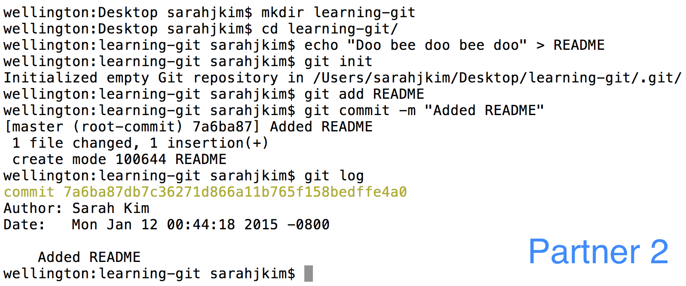
-
合作伙伴 2 还将添加合作伙伴 1 创建的远程仓库，并推送这个新 提交。
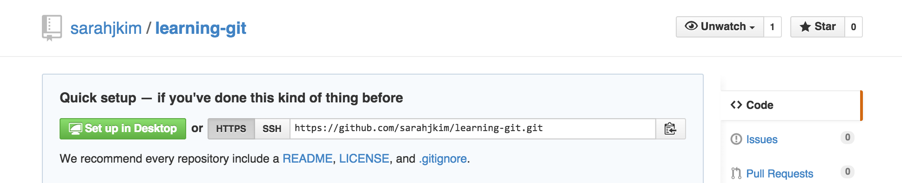
无论是 GitHub 还是 Bitbucket，你都可以在仓库的主页上找到远程 URL。
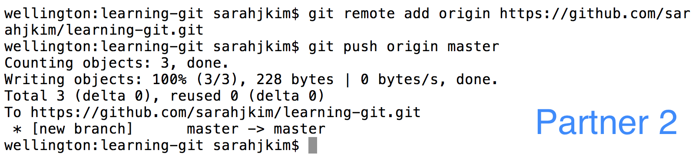
-
合作伙伴 1 现在将把远程仓库克隆到他们自己的机器上，然后在 README 的底部添加一行。（注意：在这一点上，图片可能会变得有点 混乱，因为我在假装是两个合作伙伴。）
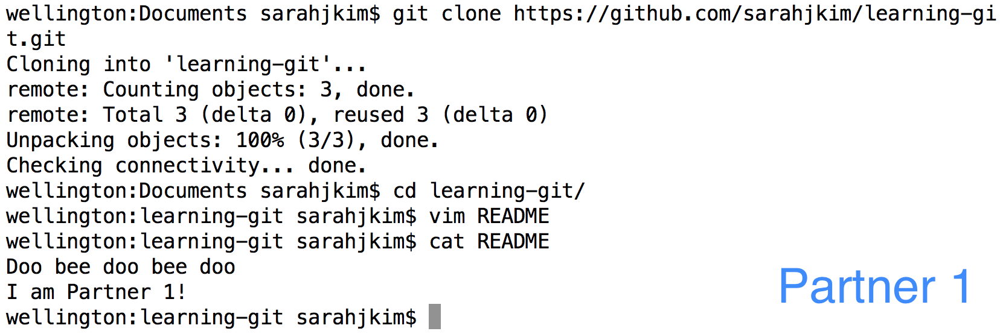
-
合作伙伴 1 将提交此更改并将其推送回远程仓库。
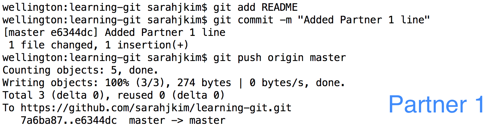
-
合作伙伴 2 将类似地在他们的 README 底部添加一行并提交 此更改。
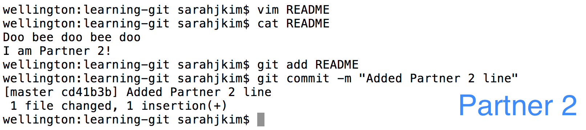
-
合作伙伴 2 现在将拉取并发现有合并冲突。
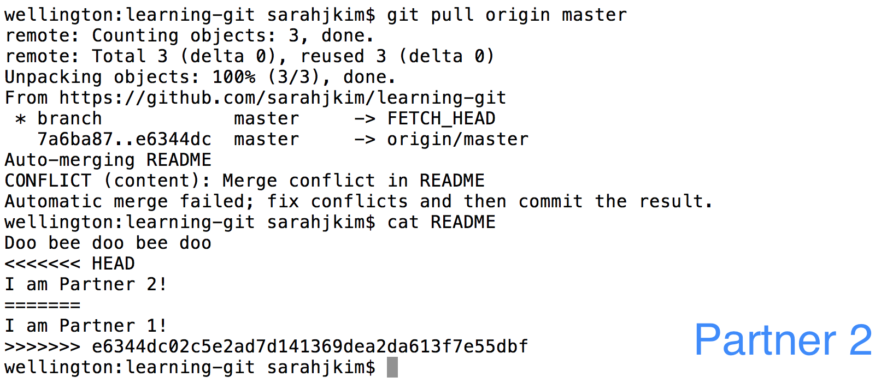
-
合作伙伴 2 应该通过重新排列行来解决合并冲突。然后 合作伙伴 2 应该添加
README并提交和推送以完成。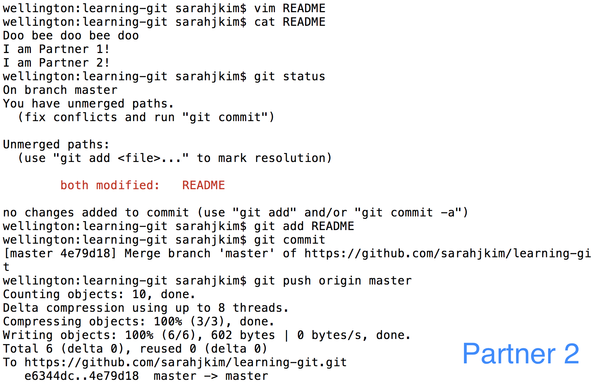
-
合作伙伴 1 现在可以拉取并获得两个新提交——添加的行和合并 提交。现在两个合作伙伴都是最新的。
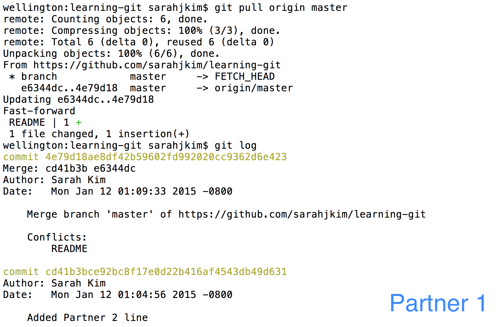
I. 总结
更多远程仓库操作
这些简单的添加/删除远程仓库、推送提交以及获取/拉取 更改的命令可以与你学到的所有关于本地 仓库的命令结合使用，为你提供与他人 协作的强大工具包。
GitHub 还有一些其他非常酷的功能，可能对项目 开发有帮助：
额外阅读
对于那些觉得这个话题有趣的人，请查看这些额外的 资源！但是请记住，学习有效使用 Git 的最佳方法 就是开始将其融入你自己的编码工作流程中！ 祝你好运，拥有一个章鱼般美好的一天！
-
Git 文档 非常好且清晰， 还有 Scott Chacon 写的一本很棒的 Pro Git 书。
-
黑客 Git 指南 是一个非常友好的 Git 工作原理介绍。它让我们一窥 提交和分支的结构，并解释了一些命令是如何工作的。
-
学习 Git 分支 是一个有趣 且互动的教程，可以可视化 Git 命令。
J. 高级 Git 功能
这里有一些更高级的功能，可能会让你的生活更轻松一点。 一旦你掌握了 git 的基本功能，你会开始注意到一些 常见任务有点乏味。这里有一些你可能 考虑使用的内置功能。
变基
Git 就是关于协作编程的，所以大多数时候，你会发现 自己在处理合并冲突。在大多数情况下，你所做的 更改与冲突的提交是分开的，这样你就可以把你的 提交直接放在所有新提交之上。然而，git 会合并两个 版本并添加一个额外的提交，让你知道你合并了。这 相当烦人，并导致相当混乱的提交历史。这就是 变基 的魔力发挥作用的地方。
当你将更改推送到 GitHub 而远程副本已被修改时，你会 被要求拉取更改。这就是你通常遇到合并冲突的地方。 相反，使用变基标志拉取：
$ git pull --rebase origin main
就这么简单！来自服务器的更改将应用到你的 工作副本上，你的提交将堆叠在顶部。
压缩提交
你可能会发现自己处于这样一种情况：你创建了许多小的提交， 它们有微小的相关更改，这些更改实际上可以存储在单个提交中。在这里， 你会想要使用 rebase 命令来压缩你的提交。假设你 有四个想要合并的提交。你将输入以下内容：
$ git rebase -i HEAD~4
从这里，系统会提示你选择一个提交来折叠其他提交 到其中，并选择哪些提交应该合并：
pick 01d1124 Adding license
pick 6340aaa Moving license into its own file
pick ebfd367 Jekyll has become self-aware.
pick 30e0ccb Changed the tagline in the binary, too.
# Rebase 60709da..30e0ccb onto 60709da
#
# Commands:
# p, pick = use commit
# e, edit = use commit, but stop for amending
# s, squash = use commit, but meld into previous commit
#
# If you remove a line here THAT COMMIT WILL BE LOST.
# However, if you remove everything, the rebase will be aborted.
#
最好选择最顶部的提交，并将其余的压缩到其中。你可以通过 将文本文件更改为此来做到这一点：
pick 01d1124 Adding license
squash 6340aaa Moving license into its own file
squash ebfd367 Jekyll has become self-aware.
squash 30e0ccb Changed the tagline in the binary, too.
# Rebase 60709da..30e0ccb onto 60709da
#
# Commands:
# p, pick = use commit
# e, edit = use commit, but stop for amending
# s, squash = use commit, but meld into previous commit
#
# If you remove a line here THAT COMMIT WILL BE LOST.
# However, if you remove everything, the rebase will be aborted.
#
瞧！所有那些微小的提交都折叠成了一个提交，你有了一个 更干净的日志文件。
终极方案：克隆一份新的仓库副本
如果一切都失败了，而你只是想能够推送和提交你的代码， 一个选择是：
- 关闭 IntelliJ。
- 重命名你的旧仓库文件夹（例如从 sp23-s208 改为 sp23-s208-busted）。
- 使用实验 1 的说明克隆你仓库的新副本（例如 sp23-s208）。
- 将所需文件从损坏的副本复制到新副本中。
此过程的视频演示可在 此视频 中找到。